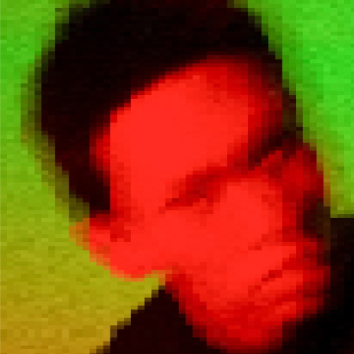

주령
👈
예술은 왜곡된 세계의 정류장이라고 생각해요. 그 어떤 예술도 삶의 총체성을 능가할 수 없습니다.
삶을 빵처럼 잘라 미적 분석을 통해 작품으로 상정하는 작업을 한다. ‘길별’과 ‘유령적 클럽활동’ 등의 실천 예술을 중점적으로 음악과 문학, 회화, 사진 등 다양한 매체를 가리지 않고 도구 삼는다. 쉼의 의미를 발굴하기 위해 노력하는데, 요즘엔 요가나 명상을 즐긴다.